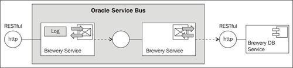
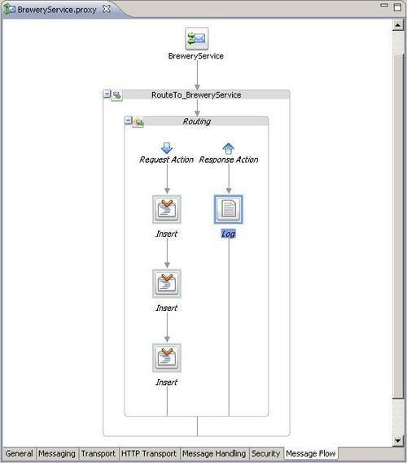
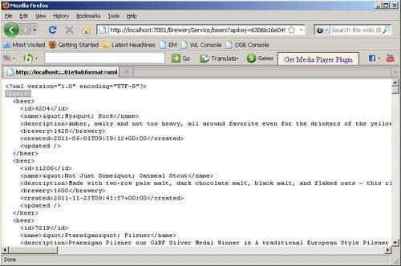

In this recipe, we will show you how to implement a RESTful gateway on the OSB, which will accept RESTful requests and then routes these requests to the real implementation of the service that can also be a RESTful service. This adds an additional layer of processing logic, which can be used for things such as auditing, security, and SLA monitoring.
We will use an external public service called Brewery DB, which offers a RESTful API (http://www.brewerydb.com/api/documentation) to execute queries for breweries, beers, styles, and other information about beer.
The gateway we implement will be generic in such a way that it accepts all the different requests through one single proxy service and then routes the request directly to the business service, wrapping the external RESTful API of the Brewery DB service.

To use the Brewery DB service API, an API key is needed. Just register for such an API key here: http://www.brewerydb.com/api/register.
Make sure to have access to the Internet and check that the Brewery DB API is accessible, by executing the following request from a browser: http://www.brewerydb.com/api/styles?apikey=<api-key>. Make sure that you replace the<api-key> with your own key. The service should respond with an XML document holding the different styles of beers.
We will start with the business service, which will wrap the Brewery DB service API. In Eclipse OEPE, perform the following steps:
creating-generic-restful-gateway and add a business and proxy folder to the project. business folder of the project, create a new business service and name it BreweryService.By doing that the business service wrapping the Brewery DB service API is in place.
Next, let's create the proxy service that will offer the same RESTful API and just passes request messages through to the Brewery DB service using the business service created previously. In Eclipse OEPE, perform the following steps:
BreweryService.biz and select Oracle Service Bus | Generate Proxy Service. BreweryService into the File name field and select the proxy folder for the location of the proxy service from the tree. /BreweryService into the EndpointURI field. outbound into the In Variable field.<http:http-method>{$inbound/ctx:transport/ctx:request/http:http-method}</http:http-method> into the Expression field and click OK. ./ctx:transport/ctx:request into the Expression field and click OK.<http:query-string>{$inbound/ctx:transport/ctx:request/http:query-string}</http:query-string> into the Expression field and click OK.<http:relative-URI>{$inbound/ctx:transport/ctx:request/http:relative-URI}</http:relative-URI> into the Expression field and click OK. $body and click OK.
Our generic RESTful service gateway is now ready and can be tested. Open a browser window and perform the following steps:
<api-key> with your key): http://localhost:7001/BreweryService/beers?apikey=<api-key>&format=xml.
<api-key> with your key): http://localhost:7001/BreweryService/beers?apikey=<api-key>&format=json.<api-key> with your key): http://localhost:7001/BreweryService/breweries?apikey=<api-key>.In this recipe, we created a generic RESTful service gateway that accepts RESTful requests and passes it through to the Brewery DB RESTful service API.
We have created one single proxy service, accepting requests on the (base) Endpoint URI: http:\\<osbserver>:<osb-port>\BreweryService. By doing that, the message flow of the proxy service will be triggered for all requests using this base URI, such as:
http://localhost:7001/BreweryService/beers?apikey=<api-key>&format=xmlhttp://localhost:7001/BreweryService/breweries?apikey=<api-key>By adding the three Insert actions into the message flow of the proxy service we make sure that the HTTP method, the relative part of the URI (such as /beers and /breweries), as well as the query parameters (such as apikey and format) are copied from the inbound into the outbound variable. This is important, as the generic business service also only holds the base part of the Endpoint URI: http://www.brewerydb.com/api. When sending a request to the Brewery DB service, the values of the<http:relative-URI> and<http:query-string> elements in the outbound variable are combined with the Endpoint URI.
So far only the response of the Brewery DB service is logged. But this centralized, additional layer of processing logic can be useful for many other things, such as: